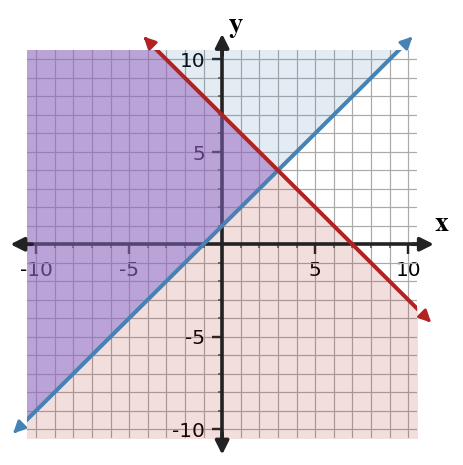

Review Practice Problems
Fisher says any two nonvertical lines must intersect. Give the one condition on two different nonvertical lines that makes his claim false.
Use elimination to find the intersection point of the lines.
$$\begin{aligned}x=-2y-3\\4y-x=9\end{aligned}$$
The table gives values for two lines at selected $x$-values. The system is $y_A=2x-1$ and $y_B=-x+8$.
| $x$ | 1 | 2 | 3 | 4 |
|---|---|---|---|---|
| $y_A$ | 1 | 3 | 5 | 7 |
| $y_B$ | 7 | 6 | 5 | 4 |
Use the table and the equations to identify the solution and explain why both representations agree.
Solve the system. Then write one sentence explaining what the graph of the two equations would look like.
$$\begin{aligned}y=3x+2\\6x-2y=8\end{aligned}$$
What is the first algebraic goal after substituting one expression into the other equation?
Substitute to determine the solution type, then interpret what that result means about the graph relationship.
$$\begin{aligned}y=\frac{1}{2}x+3\x-2y=-6\end{aligned}$$
A student solves the system below by replacing $x$ with $2y+1$ in the first equation, getting $3(2y+1)+y=24$.
$$\begin{aligned}3x+y=24\x=2y-1\end{aligned}$$
Critique the substitution step, correct the equation, and solve.
Rewrite the first equation to isolate $y$, then solve the system by substitution.
$$\begin{aligned}3x+y=17\y=x+1\end{aligned}$$
If Plan A costs 15 + 4m dollars and Plan B costs 9 + 6m dollars, what does solving $(15+4m)=(9+6m)$ find?
A school store sold 52 snacks. Granola bars cost \$1.50 and fruit cups cost \$2.25. Total sales were \$91.50. Write and solve a system.
A school store sells pencils and pens. A student writes $p+n=60$ and $p+2n=95$ without defining variables.
Analyze the structure of the equations and write a precise interpretation for each variable and coefficient so the model makes sense.
Two water tanks are draining. Tank A has 80 gallons and loses 5 gallons per minute. Tank B has 50 gallons and loses 2 gallons per minute. Write and solve a system to find when they contain the same amount.
Does the boundary line belong to the solution set for $y\ge -3x+2$?
The graph shows a linear inequality. Identify the boundary type and write one possible inequality represented by the graph.

The graph and inequality statement are both being used for a budget model.

Compare the graph to the statement “allowed choices satisfy $y\ge -\frac{1}{2}x+2$.” Explain how the boundary and a test point support or challenge the statement.
Use the test point $(0,0)$ to decide whether it is a solution to $y\le 2x-5$. Then state which side should be shaded.
If a point satisfies one constraint but not the other, is it feasible for the system?
A snack pack must have at least 3 fruit items and at most 10 total items. Let $f$ be fruit items and $c$ be crackers. Write a system of inequalities.
Analyze the structure of the system below without graphing every point.
$$\begin{aligned}y\ge x+5\y\le x-2\end{aligned}$$
Decide whether the feasible region is empty or nonempty, and justify using the relationship between the boundary lines.
The graph shows a system of inequalities. Name two feasible points and one non-feasible point.
